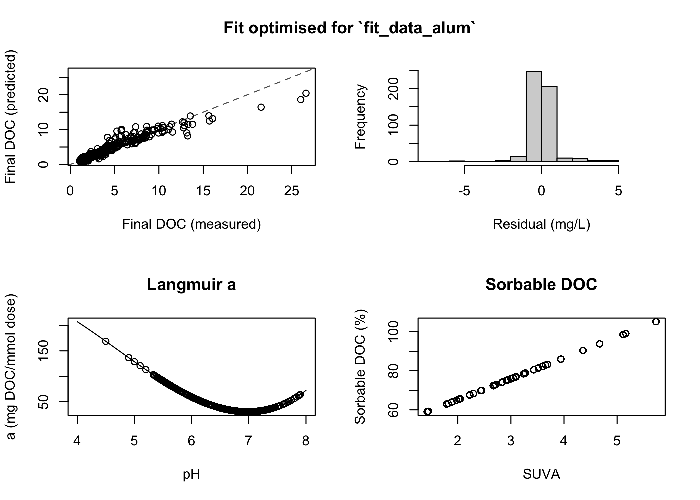

The goal of edwards97 is to implement the Edwards (1997) Langmuir-based semiempirical coagulation model, which predicts the concentration of organic carbon remaining in water after treatment with an Al- or Fe-based coagulant. Methods and example data are provided to optimise empirical coefficients.
This package is experimental, under constant development, and is in no way guaranteed to give accurate predictions (yet).
Installation
You can install the development version from GitHub with:
# install.packages("remotes")
remotes::install_github("paleolimbot/edwards97")Example
This is a basic example which shows you how to solve a common problem:
library(edwards97)
fit_data_alum <- edwards_data("Al")
# optimise coefficients for this dataset
fit <- fit_edwards_optim(fit_data_alum, initial_coefs = edwards_coefs("Al"))
# view fit results
print(fit)
#> <edwards_fit_optim>
#> Fit optimised for `fit_data_alum`
#> Coefficients:
#> x3 = 5.14, x2 = -72.4, x1 = 259, K1 = -0.107, K2 = 0.562, b = 0.0951, root = -1
#> Performance:
#> r^2 = 0.955, RMSE = 0.935 mg/L, number of finite observations = 500
#> Input data:
#> DOC dose pH UV254
#> Min. : 1.80 Min. :0.008378 Min. :4.500 Min. :0.0260
#> 1st Qu.: 2.81 1st Qu.:0.132264 1st Qu.:5.808 1st Qu.:0.0810
#> Median : 3.94 Median :0.228983 Median :6.500 Median :0.1060
#> Mean : 6.36 Mean :0.264423 Mean :6.430 Mean :0.2323
#> 3rd Qu.: 6.70 3rd Qu.:0.354291 3rd Qu.:6.955 3rd Qu.:0.2470
#> Max. :26.50 Max. :1.515151 Max. :7.900 Max. :1.3550
#> DOC_final Predictions Langmuir a Sorbable DOC (%)
#> Min. : 1.030 Min. : 0.775 Min. : 30.25 Min. : 59.05
#> 1st Qu.: 1.968 1st Qu.: 1.984 1st Qu.: 32.92 1st Qu.: 67.62
#> Median : 2.700 Median : 2.748 Median : 41.22 Median : 75.32
#> Mean : 3.793 Mean : 3.774 Mean : 52.58 Mean : 76.72
#> 3rd Qu.: 4.025 3rd Qu.: 4.286 3rd Qu.: 70.51 3rd Qu.: 82.34
#> Max. :26.610 Max. :20.430 Max. :168.85 Max. :105.16
plot(fit)
Using the fit, you can make predictions about unknown inputs:
grid <- coagulate_grid(fit, DOC = c(4, 8), UV254 = c(0.2, 0.4)) %>%
mutate(label = glue::glue("DOC: {DOC} mg/L, UV254: {UV254} 1/cm"))
diminishing_returns <- grid %>%
group_by(label, pH) %>%
summarise(dose = dose_of_diminishing_returns(dose, DOC_final, threshold = 0.3 / 10))
#> `summarise()` has grouped output by 'label'. You can override using the
#> `.groups` argument.
ggplot(grid, aes(x = dose, y = pH)) +
geom_raster(aes(fill = DOC_final)) +
geom_path(data = diminishing_returns, col = "red", size = 1) +
facet_wrap(vars(label)) +
coord_cartesian(expand = FALSE)